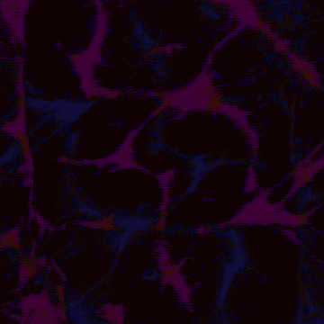
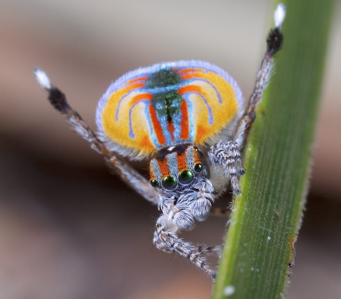
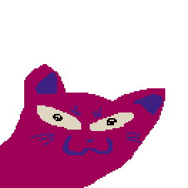

wassup i'm eithne (eth-nah) 🦭🦭🦭
i am a programmer and artist currently trying to branch out and be more consistent with making stuff in the hopes i can get out of my depression.
this website is going to probably eat up a lot of my time because when i've got something i want to work on i kind of just get addicted to it and think of nothing else... but hopefully it will also benefit me some by motivating me to get up and onto my computer rather than laying on the floor of the my room all day.
probably not. do i care though? ehhhhhh not really.. im really grasping onto whatever i can to get myself out of this rut. so if this does it, yay. if not, darn. but i'm feeling optimistic... i have a lot of plans for this site and would like to explore some interesting website page ideas i have tucked away, along with making something interesting for me to look back on in the future if i keep it up.
this blog will be used to house most of my thoughts on stuff. it'll be somewhat structured... at least compared to whatever other thought cabinet things i decide to add to the website. i'll be upfront and say i'm a tranny if you couldn't notice already by everything, so expect what i write about and my perspective on lots of things to reflect that.
okay... bye! <3

spider in case you couldn't tell ^^^
